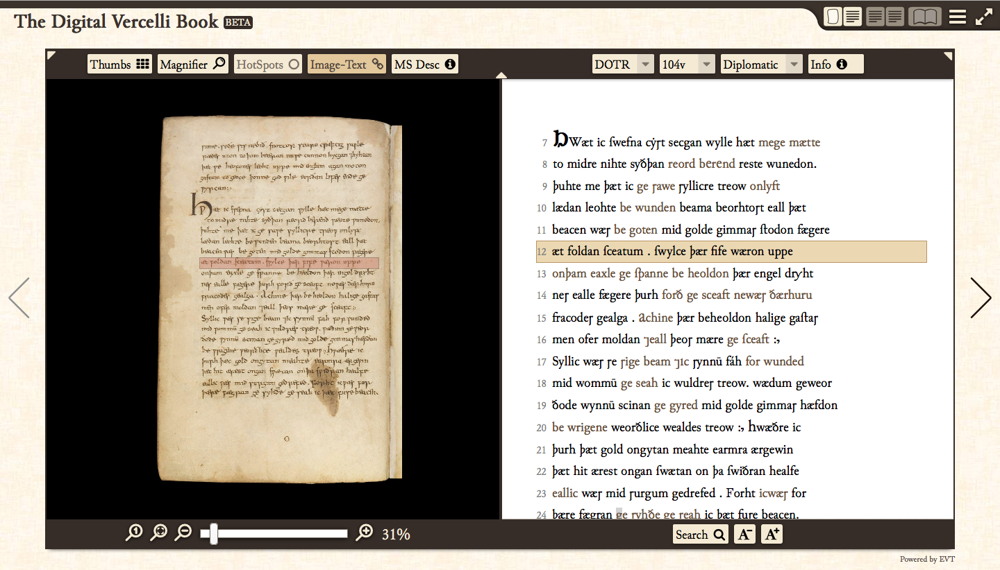
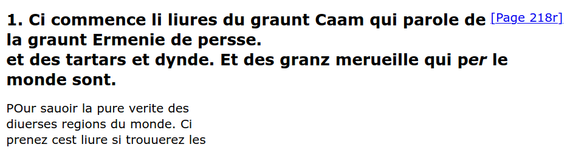
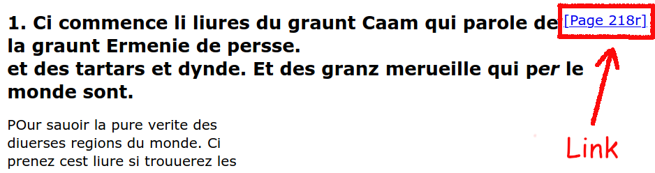
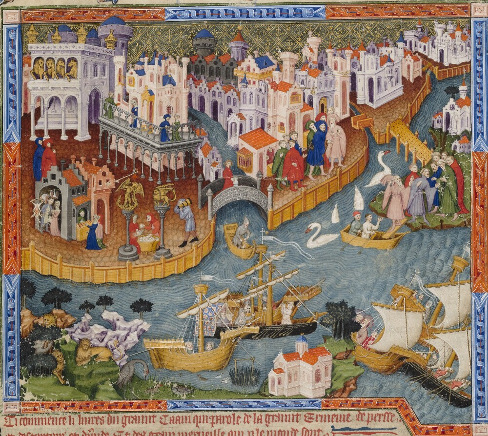

<!doctype html>
<html lang="en">

	<head>
		<meta charset="utf-8">
                <meta name="author" content="Paolo Monella" />
                <meta name="dc.creator" content="Paolo Monella" />
                <meta name="description"
                  content="Slides for a workshop on integrating TEI XML and IIIF for digital philology" />
                <meta name="keywords" content="Digital Humanities, Digital Philology, IIIF, TEI XML, DH" />
                <meta name="dc.created" scheme="ISO8601" content="2020-07-03" />
                <meta name="dc.rights" scheme="dcterms.uri" content="http://creativecommons.org/licenses/by-sa/4.0/" />
                <meta name="generator" content="vim" />

		<title>Linking Text and image: TEI XML and IIIF</title>

		<link rel="stylesheet" href="dist/reveal.css">
		<link rel="stylesheet" href="dist/theme/white.css" id="theme">

        <link rel="stylesheet" href="plugin/highlight/monokai.css">
        <script src="plugin/highlight/highlight.js">case_insensitive: false;</script>
	</head>

	<body>

		<div class="reveal">

			<div class="slides">

                <!-- Slides are separated by three dashes (quick 'n dirty regular expression) -->
                <section data-markdown data-separator="
---
" data-separator-vertical="--">

<script type="text/template">


---

## Linking Text and image



---

## Linking text and image

Let\'s link our TEI digital edition to a **local** image

---

## TEI → Local image
### Encoding

--

## TEI → Local image
### Encoding

1. Local image [218r.jpg](assets/iiif2020/img/218r.jpg) is in the same folder in which you have your TEI XML file
2. TEI code:

`<pb facs="218r.jpg" n="218r"/>`

--

## TEI → Local image
### Encoding

Alternatively: 

1. Local image [218r.jpg](assets/iiif2020/img/218r.jpg) is in an `images` subfolder
2. TEI code:

`<pb facs="images/218r.jpg" n="218r"/>`

--

## TEI → Online image (WWW)
### Encoding

1. Image [218r.jpg](assets/iiif2020/img/218r.jpg) is in a Website
2. TEI code:

`<pb facs="https://vedph.github.io/summercamp/materials/monella/slides/assets/iiif2020/img/218r.jpg" n="218r"/>`

---

## TEI → Local image
### Visualization

--

## TEI → Local image
### Visualization


<a href="http://evt.labcd.unipi.it/"  target="_blank">EVT - Edition Visualization Technology</a>


--

## TEI → Local image
### Visualization

<a href="https://oxgarage.tei-c.org/#" target="_blank">OxGarage</a> / XSLT transformation



--

## TEI → Local image
### Visualization

<a href="https://oxgarage.tei-c.org/#" target="_blank">OxGarage</a> / XSLT transformation



---

## Issue: permission from libraries

<ul>
<li>Libraries claim copyright over photos of MS pages
        <ul>
        <li>written 1000 years ago</li>
        <li>with texts composed 2000 years ago</li>
        </ul>
        </li>
</ul>

---

## Solution: IIIF

Images stay on their server
<br/>
(e.g. the Bodleian Library)

and may be integrated
<br/>
(e.g. in "distributed" editions)

---

## What is IIIF?

<a href="https://iiif.io/" target="_blank">IIIF</a> is a framework
<br/>
(a language shared between computers)
<br/>
to serve images with medatata.


---

## What does IIIF stand for?

International Image Interoperability Framework

---

## View a manuscript with IIIF

Bodleian Library MS. Bodl. 264: _Mirador Viewer_

<a href="https://iiif.bodleian.ox.ac.uk/iiif/mirador/2d7945ce-b71e-41c6-ad1f-8af6b92f020f" target="_blank">https://iiif.bodleian.ox.ac.uk/iiif/mirador/2d7945ce-b71e-41c6-ad1f-8af6b92f020f</a>

↓

- go to _fol. 218r_ from thumbnails below
- or to _Li Livres du Graunt Caam_ from menu left
- other viewers (<a href="https://digital.bodleian.ox.ac.uk/inquire/Discover/Search/#/?p=c+11,t+,rsrs+0,rsps+10,fa+,so+ox%3Asort%5Easc,scids+,pid+ae9f6cca-ae5c-4149-8fe4-95e6eca1f73c,vi+699adfb3-a5da-4b09-9759-41eee3713bc3" target="_blank">1</a>; <a href="https://iiif.bodleian.ox.ac.uk/iiif/viewer/2d7945ce-b71e-41c6-ad1f-8af6b92f020f#?c=0&m=0&s=0&cv=456&r=0&xywh=-3992%2C0%2C13323%2C6816" target="_blank">2</a>)

---

## IIIF for philologists

<table>

<tr>
<th>MS page</th>
<th>Manuscript</th>
</tr>

<tr>
<td>Canvas</td>
<td>Collection</td>
</tr>

<tr>
<td><a href="https://iiif.io/api/image/2.1/" target="_blank">Image API</a></td>
<td><a href="https://iiif.io/api/presentation/2.1/" target="_blank">Presentation API</a></td>
</tr>

<tr>
<td>

</td>
<td>

</td>
</tr>

</table>

Source: J. Ronallo, <a href="https://ronallo.com/iiif-workshop/presentation/shared-canvas.html" target="_blank">Workshop: Shared Canvas</a>
--

## Canvas ← Image(s)

- One canvas may include many images, e.g.:
    - new photos of same MS
    - new photos taken after MS restoration
    - advanced imaging (multi-spectral imaging, X-Ray, CT-scan etc.)
--

## Canvas ← Annotation(s)

Canvases may include images and other "annotations"


Source: Jason Ronallo, <a href="https://ronallo.com/iiif-workshop/presentation/shared-canvas.html" target="_blank">Workshop: Shared Canvas</a>

---

## JSON metadata files

--

## JSON metadata files

- Manifest: <a href="https://iiif.bodleian.ox.ac.uk/iiif/manifest/ae9f6cca-ae5c-4149-8fe4-95e6eca1f73c.json" target="_blank">https://iiif.bodleian.ox.ac.uk/iiif/manifest/ae9f6cca-ae5c-4149-8fe4-95e6eca1f73c.json</a>
- Canvas: <a href="https://iiif.bodleian.ox.ac.uk/iiif/canvas/699adfb3-a5da-4b09-9759-41eee3713bc3.json" target="_blank">https://iiif.bodleian.ox.ac.uk/iiif/**canvas**/699adfb3-a5da-4b09-9759-41eee3713bc3.json</a>
- Image: <a href="https://iiif.bodleian.ox.ac.uk/iiif/image/699adfb3-a5da-4b09-9759-41eee3713bc3/info.json" target="_blank">https://iiif.bodleian.ox.ac.uk/iiif/**image**/699adfb3-a5da-4b09-9759-41eee3713bc3/**info.json**</a>
- Image **file**: <a href="https://iiif.bodleian.ox.ac.uk/iiif/image/699adfb3-a5da-4b09-9759-41eee3713bc3/full/full/0/default" target="_blank">https://iiif.bodleian.ox.ac.uk/iiif/image/699adfb3-a5da-4b09-9759-41eee3713bc3/**full/full/0/default**</a>

--

## JSON metadata files
### Metadata → image file

<table>

<tr>
<th>Image metadata file URL</th>
<th>Actual image file URL</th>
</tr>

<tr>
<td>JSON</td>
<td>JPG</td>
</tr>

<tr>
<td>
<a href="https://iiif.bodleian.ox.ac.uk/iiif/image/699adfb3-a5da-4b09-9759-41eee3713bc3/info.json">https://iiif.bodleian.ox.ac.uk/iiif/image/699adfb3-a5da-4b09-9759-41eee3713bc3/<strong>info.json</strong></a>
</td>
<td>
<a href="https://iiif.bodleian.ox.ac.uk/iiif/image/699adfb3-a5da-4b09-9759-41eee3713bc3/full/full/0/default">https://iiif.bodleian.ox.ac.uk/iiif/image/699adfb3-a5da-4b09-9759-41eee3713bc3/<strong>full/full/0/default</strong></a>
</td>
</tr>

<tr>
<td>
→ `/info.json`
</td>
<td>
→ `/full/full/0/default`
</td>
</tr>

</table>

---

## Image API

Full image:
<a href="https://iiif.bodleian.ox.ac.uk/iiif/image/699adfb3-a5da-4b09-9759-41eee3713bc3/full/full/0/default" target="_blank">https://iiif.bodleian.ox.ac.uk/iiif/image/699adfb3-a5da-4b09-9759-41eee3713bc3/**full**/full/0/default</a>


--

## Image API

Cropped region:
<a href="https://iiif.bodleian.ox.ac.uk/iiif/image/699adfb3-a5da-4b09-9759-41eee3713bc3/500,3550,3000,140/full/0/default" target="_blank">https://iiif.bodleian.ox.ac.uk/iiif/image/699adfb3-a5da-4b09-9759-41eee3713bc3/**500,3550,3000,140**/full/0/default</a>


--

## Image API

- Resizing, cropping etc. happens on the server
- I can ask for a specific size, region etc. of an image through an URL
- the server creates an _ad hoc_ image and only returns that

---

## Image API
### Let\'s manipulate an image

- Full image
- resizing (size)
- cropping (region)
- quality (color, gray...)
- rotation

---

## Full image

--

## Full image

<a href="https://iiif.bodleian.ox.ac.uk/iiif/image/699adfb3-a5da-4b09-9759-41eee3713bc3/full/full/0/default" target="_blank">https://iiif.bodleian.ox.ac.uk/iiif/image/699adfb3-a5da-4b09-9759-41eee3713bc3/**full/full/0/default**</a>

---

## File formats

--

## File formats

Full image with file extension at the end (**.jpg**):

<a href="https://iiif.bodleian.ox.ac.uk/iiif/image/699adfb3-a5da-4b09-9759-41eee3713bc3/full/full/0/default.jpg" target="_blank">https://iiif.bodleian.ox.ac.uk/iiif/image/699adfb3-a5da-4b09-9759-41eee3713bc3/full/full/0/default**.jpg**</a>

--

## File formats

...with file extension at the end (**.jp2**):

<a href="https://iiif.bodleian.ox.ac.uk/iiif/image/699adfb3-a5da-4b09-9759-41eee3713bc3/full/full/0/default.jp2" target="_blank">https://iiif.bodleian.ox.ac.uk/iiif/image/699adfb3-a5da-4b09-9759-41eee3713bc3/full/full/0/default**.jp2**</a>

--

## File formats

The server has no copy of this image in **.png** format, so this returns an error:

<a href="https://iiif.bodleian.ox.ac.uk/iiif/image/699adfb3-a5da-4b09-9759-41eee3713bc3/full/full/0/default.png" target="_blank">https://iiif.bodleian.ox.ac.uk/iiif/image/699adfb3-a5da-4b09-9759-41eee3713bc3/full/full/0/default**.png**</a>

--

## File formats

...with file extension **before**:

<a href="https://iiif.bodleian.ox.ac.uk/iiif/image/699adfb3-a5da-4b09-9759-41eee3713bc3.jp2/full/full/0/default" target="_blank">https://iiif.bodleian.ox.ac.uk/iiif/image/699adfb3-a5da-4b09-9759-41eee3713bc3**.jp2**/full/full/0/default</a>

---

## Cropping

--

## Cropping

Full image, no cropping:

<a href="https://iiif.bodleian.ox.ac.uk/iiif/image/699adfb3-a5da-4b09-9759-41eee3713bc3/full/full/0/default" target="_blank">https://iiif.bodleian.ox.ac.uk/iiif/image/699adfb3-a5da-4b09-9759-41eee3713bc3/**full**/full/0/default</a>

--

## Cropping

Illuminated initial:

<a href="https://iiif.bodleian.ox.ac.uk/iiif/image/699adfb3-a5da-4b09-9759-41eee3713bc3/230,3650,980,1120/full/0/default" target="_blank">https://iiif.bodleian.ox.ac.uk/iiif/image/699adfb3-a5da-4b09-9759-41eee3713bc3/**230,3650,980,1120**/full/0/default</a>

--

## Cropping


--

## Cropping

Panoramic view of the city of Venice:

<a href="https://iiif.bodleian.ox.ac.uk/iiif/image/699adfb3-a5da-4b09-9759-41eee3713bc3/510,550,3580,3200/full/0/default" target="_blank">https://iiif.bodleian.ox.ac.uk/iiif/image/699adfb3-a5da-4b09-9759-41eee3713bc3/**510,550,3580,3200**/full/0/default</a>

--

## Cropping

First line of the rubric (*Ci commence li livres du graunt Caam qui parole de la graunt Ermenie de Perſſe*):

<a href="https://iiif.bodleian.ox.ac.uk/iiif/image/699adfb3-a5da-4b09-9759-41eee3713bc3/500,3550,3000,140/full/0/default" target="_blank">https://iiif.bodleian.ox.ac.uk/iiif/image/699adfb3-a5da-4b09-9759-41eee3713bc3/**500,3550,3000,140**/full/0/default</a>

--

## Cropping

Second line of the rubric (*et deſ tartars et dŷnde. Et des granz merveille. qui ꝑ le monde ſont*):

<a href="https://iiif.bodleian.ox.ac.uk/iiif/image/699adfb3-a5da-4b09-9759-41eee3713bc3/530,3670,2400,140/full/0/default" target="_blank">https://iiif.bodleian.ox.ac.uk/iiif/image/699adfb3-a5da-4b09-9759-41eee3713bc3/**530,3670,2400,140**/full/0/default</a>

--

## Cropping

See paragraph <a href="https://iiif.io/api/image/2.1/#region" target="_blank">Region</a> in the API documentation

---

## Resizing

--

## Resizing

Full size, no resizing:

<a href="https://iiif.bodleian.ox.ac.uk/iiif/image/699adfb3-a5da-4b09-9759-41eee3713bc3/full/full/0/default" target="_blank">https://iiif.bodleian.ox.ac.uk/iiif/image/699adfb3-a5da-4b09-9759-41eee3713bc3/full/**full**/0/default</a>

--

## Resizing

Squeeze to 50 (width) x 600 (heigth):

<a href="https://iiif.bodleian.ox.ac.uk/iiif/image/699adfb3-a5da-4b09-9759-41eee3713bc3/full/50,600/0/default" target="_blank">https://iiif.bodleian.ox.ac.uk/iiif/image/699adfb3-a5da-4b09-9759-41eee3713bc3/full/**50,600**/0/default</a>


--

## Resizing

Width 600 px:

<a href="https://iiif.bodleian.ox.ac.uk/iiif/image/699adfb3-a5da-4b09-9759-41eee3713bc3/full/50,/0/default" target="_blank">https://iiif.bodleian.ox.ac.uk/iiif/image/699adfb3-a5da-4b09-9759-41eee3713bc3/full/**50,**/0/default</a>


--

## Resizing

Height 600 px:

<a href="https://iiif.bodleian.ox.ac.uk/iiif/image/699adfb3-a5da-4b09-9759-41eee3713bc3/full/,600/0/default" target="_blank">https://iiif.bodleian.ox.ac.uk/iiif/image/699adfb3-a5da-4b09-9759-41eee3713bc3/full/**,600**/0/default</a>


--

## Resizing

See paragraph <a href="https://iiif.io/api/image/2.1/#size" target="_blank">Size</a> in the API documentation


---

## Rotation

--

## Rotation

No rotation (0°):

<a href="https://iiif.bodleian.ox.ac.uk/iiif/image/699adfb3-a5da-4b09-9759-41eee3713bc3/230,3650,980,1120/full/0/default" target="_blank">https://iiif.bodleian.ox.ac.uk/iiif/image/699adfb3-a5da-4b09-9759-41eee3713bc3/230,3650,980,1120/full/**0**/default</a>

--

## Rotation

Rotate 90°:

<a href="https://iiif.bodleian.ox.ac.uk/iiif/image/699adfb3-a5da-4b09-9759-41eee3713bc3/230,3650,980,1120/full/90/default" target="_blank">https://iiif.bodleian.ox.ac.uk/iiif/image/699adfb3-a5da-4b09-9759-41eee3713bc3/230,3650,980,1120/full/**90**/default</a>

--

## Rotation

Rotation is allowed only for multiples of 90° in this IIIF server, so 45° returns an error:

<a href="https://iiif.bodleian.ox.ac.uk/iiif/image/699adfb3-a5da-4b09-9759-41eee3713bc3/230,3650,980,1120/full/45/default" target="_blank">https://iiif.bodleian.ox.ac.uk/iiif/image/699adfb3-a5da-4b09-9759-41eee3713bc3/230,3650,980,1120/full/**45**/default</a>

--

## Rotation

Mirroring (with exclamation mark!):

<a href="https://iiif.bodleian.ox.ac.uk/iiif/image/699adfb3-a5da-4b09-9759-41eee3713bc3/230,3650,980,1120/full/!0/default" target="_blank">https://iiif.bodleian.ox.ac.uk/iiif/image/699adfb3-a5da-4b09-9759-41eee3713bc3/230,3650,980,1120/full/**!0**/default</a>

---

## Quality

--

## Quality

Default:

<a href="https://iiif.bodleian.ox.ac.uk/iiif/image/699adfb3-a5da-4b09-9759-41eee3713bc3/230,3650,980,1120/full/0/default" target="_blank">https://iiif.bodleian.ox.ac.uk/iiif/image/699adfb3-a5da-4b09-9759-41eee3713bc3/230,3650,980,1120/full/0/**default**</a>

--

## Quality

Color (same as 'default'):

<a href="https://iiif.bodleian.ox.ac.uk/iiif/image/699adfb3-a5da-4b09-9759-41eee3713bc3/230,3650,980,1120/full/0/color" target="_blank">https://iiif.bodleian.ox.ac.uk/iiif/image/699adfb3-a5da-4b09-9759-41eee3713bc3/230,3650,980,1120/full/0/**color**</a>

--

## Quality

Gray:

<a href="https://iiif.bodleian.ox.ac.uk/iiif/image/699adfb3-a5da-4b09-9759-41eee3713bc3/230,3650,980,1120/full/0/gray" target="_blank">https://iiif.bodleian.ox.ac.uk/iiif/image/699adfb3-a5da-4b09-9759-41eee3713bc3/230,3650,980,1120/full/0/**gray**</a>

--

## Quality

Bitonal (black and white):

<a href="https://iiif.bodleian.ox.ac.uk/iiif/image/699adfb3-a5da-4b09-9759-41eee3713bc3/230,3650,980,1120/full/0/bitonal" target="_blank">https://iiif.bodleian.ox.ac.uk/iiif/image/699adfb3-a5da-4b09-9759-41eee3713bc3/230,3650,980,1120/full/0/**bitonal**</a>

--

## Quality

See paragraph <a href="https://iiif.io/api/image/2.1/#quality" target="_blank">Quality</a> in the API documentation

---

## Linking text and image

Let\'s link our TEI digital edition to a **IIIF** image

---

## TEI → IIIF image
### Manifest


Source: Jason Ronallo, <a href="https://ronallo.com/iiif-workshop/presentation/shared-canvas.html" target="_blank">Workshop: Shared Canvas</a>

--

## TEI → IIIF image
### Manifest

Linking \<msDesc/\> (MS description, in the TEI header)
to a whole IIIF JSON **manifest** (metadata about collection of all images of a MS):

`<msDesc facs="https://iiif.bodleian.ox.ac.uk/iiif/manifest/ae9f6cca-ae5c-4149-8fe4-95e6eca1f73c.json">`

---

## TEI → IIIF image
### Page


--

## TEI → IIIF image
### Page

Linking \<pb/\>
to a **canvas JSON** (metadata):

`<pb facs="https://iiif.bodleian.ox.ac.uk/iiif/canvas/699adfb3-a5da-4b09-9759-41eee3713bc3.json" n="218r"/>`

--

## TEI → IIIF image
### Page

Linking \<pb/\>
to an **image JSON**<br/>
(metadata, note **info.json** at the end)

`<pb facs="https://iiif.bodleian.ox.ac.uk/iiif/image/699adfb3-a5da-4b09-9759-41eee3713bc3/info.json" n="218r"/>`

--

## TEI → IIIF image
### Page

Linking \<pb/\>
to an **actual image**<br/>
(note **full/full/0/default** at the end)

`<pb facs="https://iiif.bodleian.ox.ac.uk/iiif/image/699adfb3-a5da-4b09-9759-41eee3713bc3/full/full/0/default" n="218r"/>`

---

## TEI → IIIF image
### Line

Cropped region:
<a href="https://iiif.bodleian.ox.ac.uk/iiif/image/699adfb3-a5da-4b09-9759-41eee3713bc3/500,3550,3000,140/full/0/default" target="_blank">https://iiif.bodleian.ox.ac.uk/iiif/image/699adfb3-a5da-4b09-9759-41eee3713bc3/**500,3550,3000,140**/full/0/default</a>


--

## TEI → IIIF image
### Line

Linking \<lb/\>
to a **region** of an image file, first line of the rubric (*Ci commence li livres du Grant Caam*...):

`<lb n="1" facs="https://iiif.bodleian.ox.ac.uk/iiif/image/699adfb3-a5da-4b09-9759-41eee3713bc3/500,3550,3000,140/full/0/default"/>`

--

## TEI → IIIF image
### Line

...second line of the rubric (*et deſ tartars et dŷnde*...):

`<lb n="218r.2" facs="https://iiif.bodleian.ox.ac.uk/iiif/image/699adfb3-a5da-4b09-9759-41eee3713bc3/530,3670,2400,140/full/0/default"/>`

---

## TEI → IIIF image
### Figure



--

## TEI → IIIF image
### Figure

`<figure>`
    `<figDesc>Illumination: view of the city of Venice</figDesc>`
    `<graphic url="https://iiif.bodleian.ox.ac.uk/iiif/image/699adfb3-a5da-4b09-9759-41eee3713bc3/510,550,3580,3200/full/0/default"/>`
`</figure>`

---

## Exercise 1: TEI → Local image

Instructions:

↓

--

1. Download image [218r.jpg](assets/iiif2020/img/218r.jpg) to your local folder (the same in which you have your TEI XML file)
2. Write this in your TEI code:

`<pb facs="218r.jpg" n="218r"/>`

--

3. If you have extra time, do the same for the second page
4. Download image [218v.jpg](assets/iiif2020/img/218v.jpg) to your local folder (the same in which you have your TEI XML file)
5. Write this in your TEI code:

`<pb facs="218v.jpg" n="218v"/>`

---

## Exercise 2: Visualization

Instructions:

↓

--

Let\'s use <a href="https://oxgarage.tei-c.org/#" target="_blank">OxGarage</a> to convert our TEI XML to an HTML file looking like this:


--

1. Go to <a href="https://oxgarage.tei-c.org/#" target="_blank">OxGarage</a>


--

2. Left: Convert from → Documents → TEI P5 XML Document

--


--


--

3. Right: Convert to → xHTML

--


--

4. Left: Select file to convert → Button *Browse* →
    select and upload your TEI XML file
5. Right: Upload images → Button *Browse* → select and
    upload the image with the manuscript page facsimile
    [218r.jpg](assets/iiif2020/img/218r.jpg)

--


--

6. Bottom, center: click on button *Convert*
7. In a few seconds, a download dialog window appears → click
    *Save* to save the output HTML file
8. Open the downloaded HTML file to see the result:
    double click; your default browser will open it;
    `[Page 218r]` should now be a link to the image file


---

## Exercise 3: JSON

Open and browse IIIF JSON metadata files for page 218r; find the correct IIIF URLs for the manifest, the canvas JSON, the image JSON and the image file

Instructions:

↓

--

## JSON metadata files
### Manifest

1. Open <a href="https://iiif.bodleian.ox.ac.uk/iiif/manifest/ae9f6cca-ae5c-4149-8fe4-95e6eca1f73c.json"  target="_blank">https://iiif.bodleian.ox.ac.uk/iiif/manifest/ae9f6cca-ae5c-4149-8fe4-95e6eca1f73c.json</a>
	- A new JSON file opens up
	- _What's this?_ The **manifest** of the **collection** of photos of our MS

--

2. Click on triangles, browse to `sequences/0/canvases/456/@id`
3. Click on the URI of that `@id`, i.e.
<a href="https://iiif.bodleian.ox.ac.uk/iiif/canvas/699adfb3-a5da-4b09-9759-41eee3713bc3.json" target="_blank">https://iiif.bodleian.ox.ac.uk/iiif/canvas/699adfb3-a5da-4b09-9759-41eee3713bc3.json</a>
	- A new JSON file opens up
	- _What's this?_ The JSON file with metadata of the **canvas** of MS page 218r

--

4. Click on triangles, browse to `images/0/resource/@id`
5. Click on the URI in that `@id`, i.e.
<a href="https://iiif.bodleian.ox.ac.uk/iiif/image/699adfb3-a5da-4b09-9759-41eee3713bc3/info.json" target="_blank">https://iiif.bodleian.ox.ac.uk/iiif/image/699adfb3-a5da-4b09-9759-41eee3713bc3/**info.json**</a>
	- A new JSON file opens up
	- _What's this?_ The JSON file with metadata of the **image** of MS page 218r
--

6. Edit the URI
<a href="https://iiif.bodleian.ox.ac.uk/iiif/image/699adfb3-a5da-4b09-9759-41eee3713bc3/info.json" target="_blank">https://iiif.bodleian.ox.ac.uk/iiif/image/699adfb3-a5da-4b09-9759-41eee3713bc3/info.json</a>
directly in your browser's address bar
so that you get the **image file** URI
	- _Hint_: remove `info.json` and replace it with `full/full/0/default`
10. Once you have the new URI, hit 'enter' in the address bar of your browser to view the image
	- _What's this?_  It's the URI of the actual **image** data. Great job!

--

11. Hurray! Victory is ours!


---

## Exercise 4: TEI → IIIF image

Edit the TEI XML code of your digital edition to insert the IIIF URIs we have seen in the lecture. Instructions:

↓

--
 
1. Locate the first **page** in your edition, i.e. element `<pb n="218r"/>`, and edit it like this:

`<pb facs="https://iiif.bodleian.ox.ac.uk/iiif/image/699adfb3-a5da-4b09-9759-41eee3713bc3/full/full/0/default" n="218r"/>`

--

2. Locate the first **line** of that page in your edition, i.e. element `<lb n="1"/>` after `<pb n="218r"/>`, and edit it like this:

`<lb facs="https://iiif.bodleian.ox.ac.uk/iiif/image/699adfb3-a5da-4b09-9759-41eee3713bc3/500,3550,3000,140/full/0/default" n="1"/>`

--

3. Between `<pb n="218r"/>` and `<lb n="1"/>`, insert this **figure**:

`<figure>`
    `<figDesc>Illumination: view of the city of Venice</figDesc>`
    `<graphic url="https://iiif.bodleian.ox.ac.uk/iiif/image/699adfb3-a5da-4b09-9759-41eee3713bc3/510,550,3580,3200/full/0/default"/>`
`</figure>`

---

## Exercise 5: TEI → IIIF image
### Homework

Feel free to [email me](http://www.paolomonella.it) if you encounter any issues.

Find the IIIF URL for the 2<sup>nd</sup> page of the MS (218v) in the IIIF JSON metadata files (starting from the manifest) and connect it to &lt;pb n="218v"/&gt; in the TEI XML code of your digital edition. Instructions:

↓

--

1. Go to the <a href="https://iiif.bodleian.ox.ac.uk/iiif/manifest/ae9f6cca-ae5c-4149-8fe4-95e6eca1f73c.json" target="_blank">Bodleian MS manifest</a>
	- _Hint_: Click on the triangles on the left to open the section

--

2. In the JSON code of the <a href="https://iiif.bodleian.ox.ac.uk/iiif/manifest/ae9f6cca-ae5c-4149-8fe4-95e6eca1f73c.json" target="_blank">manifest</a>, browse to: `sequences/0/canvases/457/@id`
	- _What's this?_ Canvas n. 457 corresponds to page 218v
3. Click on the URI in that @id
	- _Hint_: it starts with `https://iiif.bodleian.ox.ac.uk/iiif/canvas` and ends with `fdbe9.json`
	- _What's this?_ It's the URI of the JSON metadata file of the **canvas** of page 218v

--

4. In the JSON metadata file of the canvas you just opened, browse to `images/0/@id`
5. Click on the URI in that @id
	- _Hint_: it starts with `https://iiif.bodleian.ox.ac.uk/iiif/annotation` and ends with `fdbe9.json`
	- _What's this?_ It is the URI of the JSON metadata file of an **annotation** to that canvas (an annotation including an image)

--

6. In the JSON metadata file of the annotation you just opened, browse to `resource/@id`
7. Click on the URI in that @id
	- _Hint_: it starts with `https://iiif.bodleian.ox.ac.uk/iiif/image` and ends with `fdbe9.json`
	- _What's this?_  It's the URI of the JSON metadata file of that **image/photo**

--

8. _Solution_: you should have just clicked on
<a href="https://iiif.bodleian.ox.ac.uk/iiif/image/497d8383-1580-419b-91bf-20452f3fdbe9/info.json" target="_blank">https://iiif.bodleian.ox.ac.uk/iiif/image/497d8383-1580-419b-91bf-20452f3fdbe9/info.json</a>
	- (if not, just click on the link above)
	- _Hint_: The photo should show a MS page starting with _dout ſans_
	- _No worries_: I got lost myself the first time I tried this. Let's continue!

↓

--

9. Edit the URI
<a href="https://iiif.bodleian.ox.ac.uk/iiif/annotation/497d8383-1580-419b-91bf-20452f3fdbe9.json" target="_blank">https://iiif.bodleian.ox.ac.uk/iiif/annotation/497d8383-1580-419b-91bf-20452f3fdbe9.json</a>
directly in your browser's address bar
so that you get the **image file** URI
	- _Hint_: remove `.json` and replace it with `/full/full/0/default`
10. Once you have the new URI, hit 'enter' in the address bar of your browser to view the image
	- _What's this?_  It's the URI of the actual **image** data. Great job!

--

11. Locate the &lt;pb&gt; element for page 218v in your digital edition's TEI XML
	- _Hint_: it's around line 101. Find this in your code:

<div style="text-align: left; font-size: 60%; margin-left: 10em">

`<div type="chapter" n="1">`

`	<pb n="218v"/>`

`        <cb n="a"/>`

`        <head rend="rubricated">`

`            <lb n="1"/>Ci dit le p<ex>re</ex>mier chapitre. Comment les .ij.`
</div>

--

12. Copy/paste the image URI as value of a @facs attribute in a &lt;pb&gt; element in your 
	- _Hint_: the result should look like `<pb facs="https://iiif.bodleian.ox.ac.uk/bla-bla-bla/full/full/0/default" n="218v"/>`
	- Go to next slide ↓ for the solution

--

13. _Solution_: `<pb facs="https://iiif.bodleian.ox.ac.uk/iiif/image/497d8383-1580-419b-91bf-20452f3fdbe9/full/full/0/default" n="218v"/>`

--

14. Hurray! Victory is ours!


---

## Learning materials and contacts

1. DARTH, <a href="http://darthcrimson.org/hacking-mirador/" target="_blank">Hacking Mirador 2016</a>
1. Paolo Monella, <a href="http://www.paolomonella.it/reires2019/index.html" target="_blank">Bologna 2019</a>
1. Tiziana Mancinelli, <a href="https://slides.com/tizmancinelli/documenta-amoris#/" target="_blank">Bologna 2020</a>
1. Paolo Monella and Roberto Rosselli Del Turco, <a href="http://www.paolomonella.it/aiucd2020/index.html" target="_blank">AIUCD 2020</a>
1. VeDPH Summer camp 2020, <a href="https://vedph.github.io/summercamp/" target="_blank">main page</a>
1. Paolo Monella, <a href="http://www.paolomonella.it" target="_blank">contacts</a>

                    </script>
                </section>

            </div>
		</div>

		<script src="dist/reveal.js"></script>
        <script src="plugin/markdown/markdown.js"></script>
        <script src="plugin/highlight/highlight.js"></script>
        <script src="plugin/notes/notes.js"></script>

		<script>

			Reveal.initialize({
				controls: true,
				progress: true,
				history: true,
				center: true,

				plugins: [ RevealMarkdown, RevealHighlight, RevealNotes ]
			});

		</script>

	</body>
</html>
